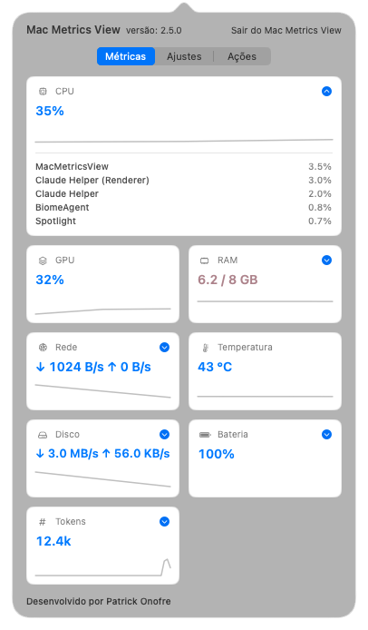
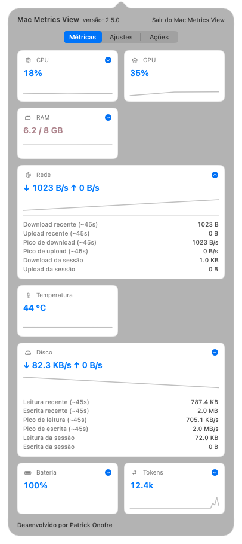

GPU in the bar
Real-time graphics processor usage, read straight from the system — new in 2.4.
Version 2.7 for macOS
CPU, GPU, memory, network, temperature, disk, battery, and AI tokens — all at a glance, without opening Activity Monitor.
No account. No telemetry. Local-only system readings.
Series 2 highlights
GPU in the bar, used/total memory, a tabbed popover, and AI tokens — the highlights on the road to 2.7.
Real-time graphics processor usage, read straight from the system — new in 2.4.
The menu bar shows memory used over your Mac's total, tinted by pressure — App Memory and Pressure stay as options.
Native macOS values: the standard system color, with red reserved for the critical state only.
A redesigned popover in cards and tabs — CPU, memory, network/disk, and tokens, each with its own detail.
Track usage and estimated cost for Claude Code and Codex — hourly pace and a daily projection.
An Activity-Monitor-style breakdown: app memory, swap, and kernel pressure, live.
Expandable cards with read/write and download/upload, plus current session totals.
Charge, power source, and battery condition right in the menu bar — on laptops.
Thermal state in °C, straight from the Apple Silicon sensors.
Pick the update rate and save energy whenever you want.
New signed versions arrive through the app itself, without re-triggering Gatekeeper.
Try it
Click the tabs to see each metric's detail — it's the real series-2 popover.

The heaviest processes, in real time.
Apps, swap, and kernel pressure, Activity-Monitor style.

Read/write and download/upload, with session totals.
Pace, estimated cost, and a daily projection.
Everything it shows
Current usage and the top-consuming processes, in the popover.
Graphics processor usage, in real time.
App memory, pressure, and swap, with a sparkline.
Live download and upload, in a compact format.
°C with a color per thermal state, on Apple Silicon.
An SSD activity light with read and write.
Charge, power source, and condition on laptops.
Usage and cost for Claude Code and Codex.
Privacy first
Mac Metrics View reads CPU, memory, network, disk, and local AI logs on your Mac. No login, no telemetry, and no external services to work.
Download
For macOS 14 or later on Apple Silicon Macs. On first launch macOS may ask for confirmation because the app isn't notarized yet — after that, it keeps itself up to date.
First launch
Because the app isn't notarized by Apple yet, macOS blocks the first launch as a precaution — it's not an error or a sign of malware. Allow the app once like this:
In the alert, choose “OK” — never “Move to Trash”. This just dismisses the warning without deleting the app.
In System Settings → Privacy & Security, scroll to “MacMetricsView was blocked” and click “Open Anyway”.
Authenticate with Touch ID or your password and click “Open”. You only need to do this once.
On macOS Ventura or earlier: right-click (or Control-click) the app and choose “Open” — skip steps 2 and 3 above.
This only applies to this first manual install. Later versions arrive through the app itself, as signed updates that don't re-trigger Gatekeeper.
Timeline
The road to version 2.7, in brief.
“Keep awake” gains an Amphetamine-style closed-lid mode: a once-approved helper keeps the Mac running with no external display, with an automatic low-battery cutoff and protection against orphaned sleep locks.
A new “Keep awake” switch in Actions prevents display and system sleep during long builds, downloads, and presentations.
A round of CPU, energy, and I/O optimizations — the monitor weighs even less on the Mac it measures.
A new graphics-usage meter and a reorganized internal architecture for the metrics to come.
Exclusive support for Apple-chip Macs (M-series); Intel compatibility code removed. Automatic light/dark theme suggestion based on ambient light.
Sampling moved off the main thread (less energy), the accessibility notice now lives only in the popover, and AI tokens focus on Claude Code and Codex.
Menu-bar RAM now shows used/total tinted by memory pressure; values are native monochrome, with red reserved for the critical state.
Redesigned popover, AI tokens (Claude, Codex, and Gemini), detailed memory, network/disk, battery, and temperature.
Hourly pace and a daily projection of your usage.
Estimated cost of AI usage, per model.
Reads Codex (ChatGPT) local logs.
Claude Code usage in the menu bar and popover.
A cleaner layout with every metric visible.
Disk activity LED and read/write detail.
Cleaning mode, open at login, and a PT/EN interface.